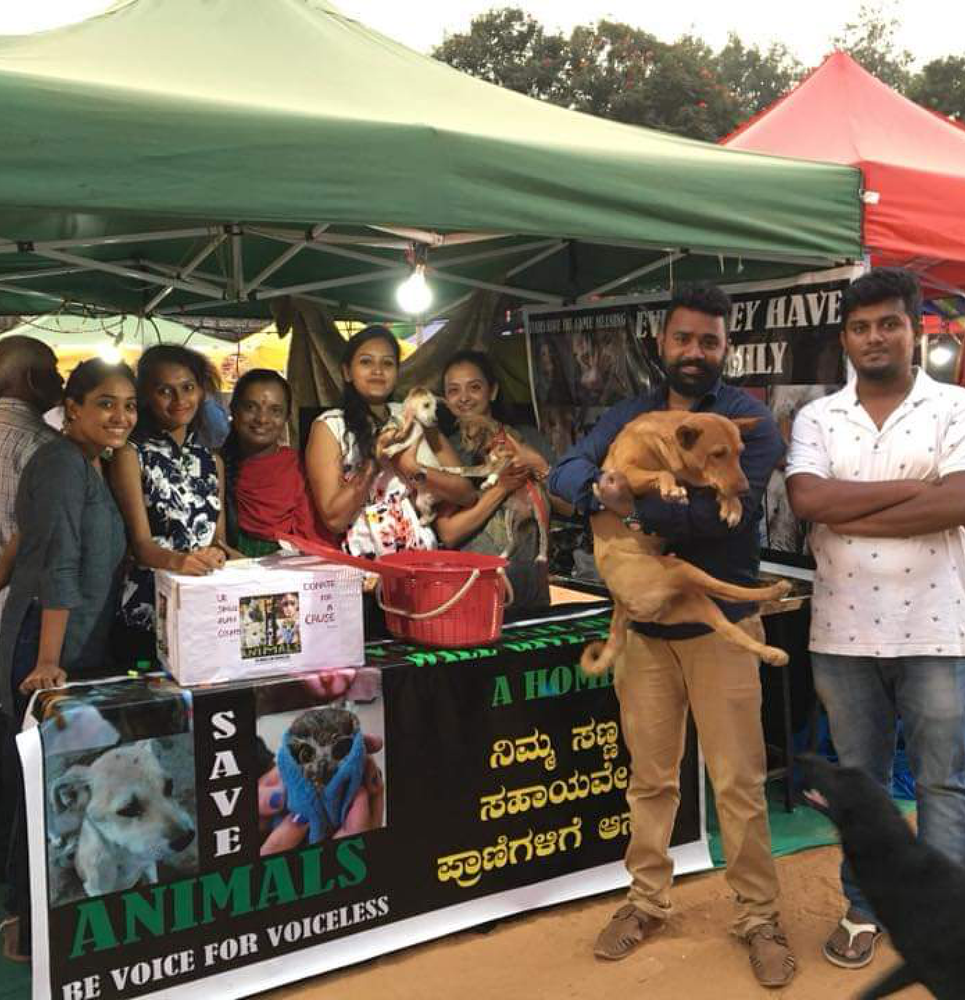

Our Main Program is to provide Rescue injured and old stray animals,
provide medical treatment, adoption, awareness, rehabilitation
centre
Our Mission
Our Mission is to serve the animal who are needy and had impeccable
progress on activities and successfully obtaining a better life for
them.
Contact Us
Sy.No. 18/2, K. Chudahalli, Somanahalli Post, Near Guhantara Resort
& KMS Farm, Uttarahalli Hobli, Kanakapura Main Road, Bangalore - 560
082
Welcome To Our Organisation
We save Animals (WSA)
How It Started
It started for Praveen in 2013, when he rescued a kitten with a spinal
injury. He nursed it at home, but it passed away after a week, leaving
Praveen to wonder what he could do to help numerous animals like this,
that suffer in silence. So he started by rescuing injured animals, and
keeping them at home. Soon, as the number of rescues increased, he
started looking for temporary shelters to house them. Eventually, the
news of his rescue got around and he started attending to approximately
4-5 cases in a day were People Use to tag him in social media Like
Facebook etc. He took the help of Dr. Girish from Blue Cross and Dr.
Lohith frm Maruthi pet clinic and started an account in their respective
clinics, so that injured animals could be attended to, without a delay
due to the finances. So as the number of rescues went up, so did the
bill amount in the clinics. But that did not deter Praveen. The word
spread, and Praveen, who was initially contacted for rescues only around
South Bangalore, started getting calls for help for cases in Mysore,
Mandya, Chikmagalur Hosur etc. To manage things better, Praveen started
a WhatsApp group With Just 6 People And started attending To this cases
full-time. He had no option but to give up his job, financial help was
low, but with his family standing behind him, praveen kept doing
whatever he could for the animals.

Praveen Kumar L also affectionately called Rider Praveen, is an ex-gym
instructor who gave up his job, his means of livelihood, all his and
his family’s assets and savings to start We Save Animals (WSA) Welfare
Trust. From paralysed, blind, old-age animals to accident cases,
cruelty cases and terminally ill animals - he takes them all in,
giving them happiness, food and a home in his shelter.